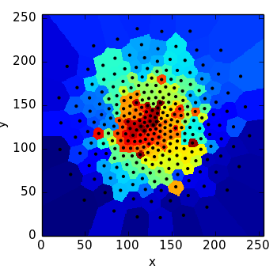

Tutorial: Equal-S/N Pixel Binning with Voronoi Diagrams¶
tess can be used to bin images into equal S/N regions. This procedure was popularized by Cappellari & Copin 2003 in the context of SAURON IFS imaging. Rather than increasing S/N by binning pixels into larger square regions, Voronoi binning optimizes resolution while giving each super pixel approximately the same noise properties.
To begin, we’ll make a mock data set with a 2D Gaussian and a fixed noise level:
import numpy as np
shape = (256, 256)
img = 10. * np.exp(-((pix_x - 128.) ** 2. / (2. * 50. ** 2.) +
(pix_y - 128.) ** 2. / (2. * 50. ** 2.)))
noise = np.ones(shape, dtype=float)
pix_sn = img / noise
To seed the Voronoi tessellation we need to partition the pixels into bins that reach our target S/N (here, 50). This is done with the tess.pixel_accretion module:
from tess.pixel_accretion import EqualSNAccretor
accretor = EqualSNAccretor(img, noise, 50.)
accretor.accrete((0, 0))
accretor.cleanup()
generator_centroids = accretor.centroids
Here we’re constructing a tess.pixel_accretion.EqualSNAccretor pipeline with our image and noise map and specify that we want bins with a minimum S/N of 50. Then we begin accretion from the pixel at (0, 0). In the cleanup phase we reassign pixels from bins that failed to grow to the desired S/N into neighbouring mature bins. Finally, accretor.centroids provides the (x,y) pixel coordinates of the centroids of each bin. Here’s a map of those centroids and pixel segmentation into roughly equal S/N bins:

Of course, this is not a Voronoi map; the bins have odd shapes dictated by the circumstances of the pixel accretion. But we can use these generator centroids as seeds for a Centroidal Voronoi Tessellation (CVT), which convergently segments the pixels into a Voronoi segmentation so that the Voronoi nodes coincide with the centre of mass of each Voronoi cell:
pix_x, pix_y = np.meshgrid(np.arange(shape[1], dtype=float),
np.arange(shape[0], dtype=float))
from tess.cvtessellation import CVTessellation
cvt = CVTessellation(pix_x.flatten(),
pix_y.flatten(),
pix_sn.flatten() ** 2.,
node_xy=generator_centroids)
cvt_x = cvt.xNode
cvt_y = cvt.yNode
print "N nodes", len(cvt_x)
cvt.set_pixel_grid((0, img.shape[1]),
(0, img.shape[0]))
segimage = cvt.make_segmap()
Plotting this segmentation image and teh cooresponding Voronoi nodes, we see
For the full source code of this example, see scripts/demo_iso_sn_voronoi.py